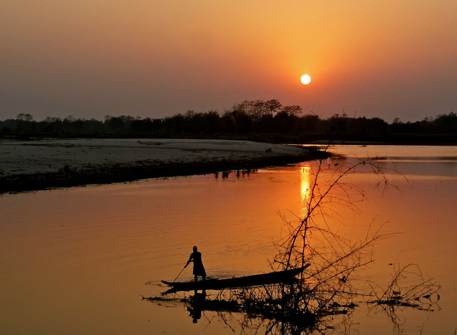
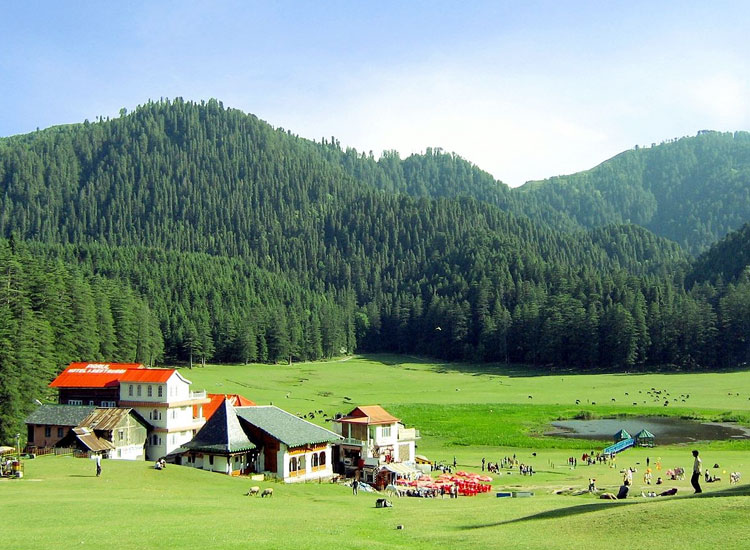
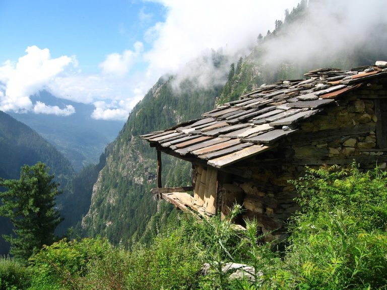
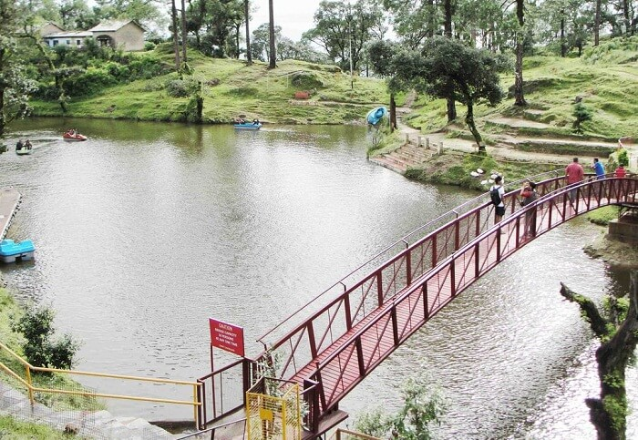
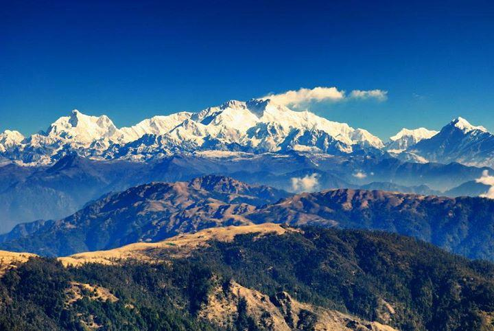
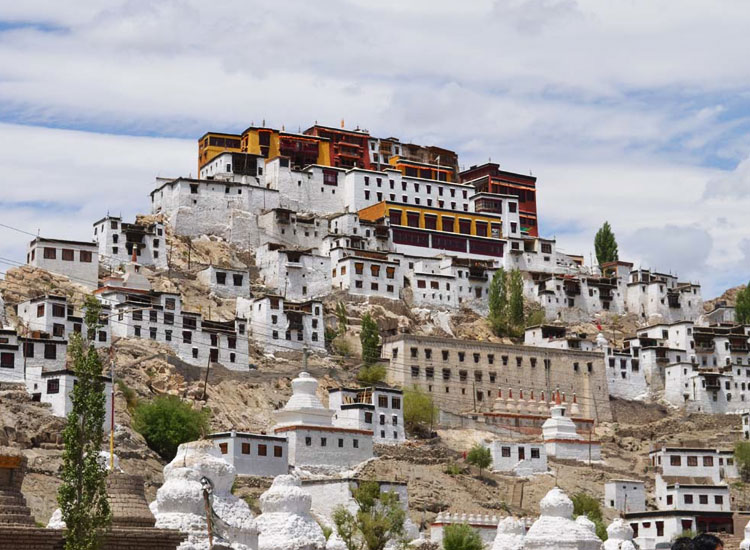
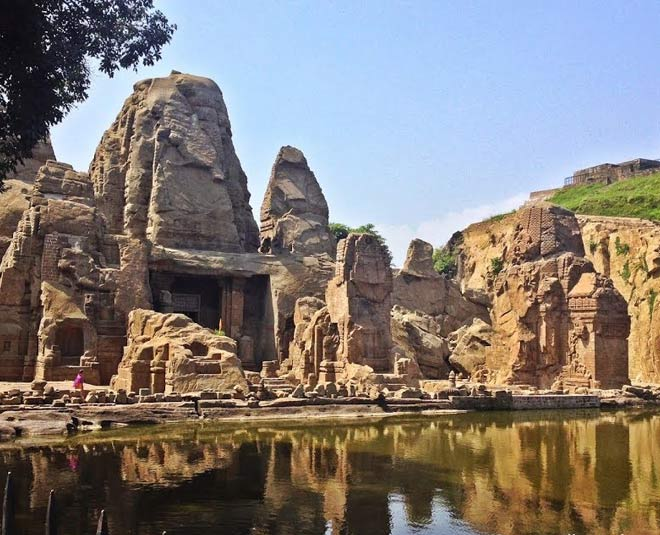
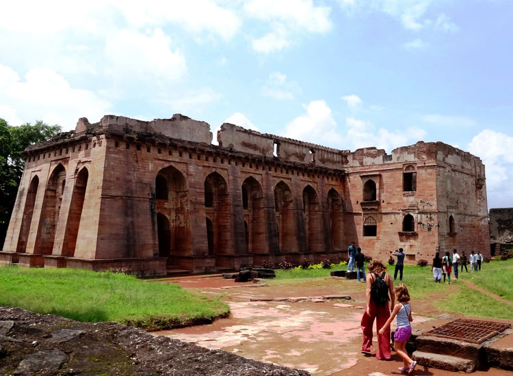

MAJULI,ASSAM
Mājuli is 20 km from Jorhat. One can take the bus or a hired taxi to the Nimati Steamer Ghat from where ferry services ply. The distance takes over three hours to cover, with three bus rides and two ferry rides. On the north bank is the river Subansiri and on the south bank, the mighty Brahmaputra has excited[clarification needed] the island from the mainland. Lakhimpur town is to the north and Golaghat is to its southwest. The town of Sibsagar is on the southeast and Jorhat is to the south. On the extreme east is Dibrugarh District.
For more Information
KHAJJIAR,HIMACHAL PRADESH
Khajjiar is a popular hill station about 26 km from Dalhousie in Himachal Pradesh. One of the 160 places in the world
that bear tropical resemblance to Switzerland, Khajjiar is situated at a height of 6500 feet and bestowed with natural
beauty and pleasant climate. Vast expanse of green meadows and dense forests besides vistas of majestic snow-clad
Himalayan peaks make Khajjiar a popular destination among tourists. The Khajjiar Lake and Chamera Lake add to the charm
of Khajjiar.
Khajjiar is also called the Gulmarg of Himachal Pradesh and serves as the starting point for treks to Chamba, Dalhousie
and Kalatop Wildlife Sanctuary among others. Indeed, trekking is the best way to explore Khajjiar. Zorbing, which
involves rolling downhill from inside a plastic ‘zorb’, is a popular recreational activity during April and May. With
its exotic flora and fauna, the Kalatop Wildlife Sanctuary is a delight for nature lovers and wildlife photographers.

MALANA,HIMACHAL PRADESH
Malana is an ancient Indian village in the state of Himachal Pradesh. This solitary village in the Malana Nala, a side valley of the Parvati Valley to the north-east of Kullu Valley, is isolated from the rest of the world. The peaks of Chanderkhani and Deo Tibba shadow the village. It is situated on a remote plateau by the side of the torrential Malana river, at a height of 2,652 metres (8,701 ft) above sea level. Malana has its own lifestyle and social structure and people are strict in following their customs. Malana has been the subject of various documentaries, including Malana: Globalization of a Himalayan Village,[2] and Malana, A Lost Identity.[3] The existing speakers of the autochthonous language Kanashi, the traditional language of the inhabitants of Malana, number approximately 1700. According to the 1961 census, the language speakers were then 563, but today the population of Malana is at least three times as large as 40 years ago.[4] The most common route to the village is by taxi or bus from Jhari. One stop prior to Malana. Roads till Malana Village trekking gate are developed.
For More Information
MALUTI TEMPLE, JHARKHAND
Maluti temples are a group of 72 extant terracotta temples (out of the original number of 108),[1] located in the Maluti village near Shikaripara in Dumka district on the eastern part of the Chota Nagpur Plateau, Indian state of Jharkhand.[2] These temples, according to the Indian Trust for Rural Heritage and Development (ITRHD), were built between the 17th and 19th centuries. The kings of Baj Basanta dynasty built these temples in Maluti, their capital, inspired by goddess Mowlakshi, their family deity. Many of the temples are deified with different denominations of gods and goddesses, apart from the tutelary deity Mowlakshi, and others such as Shiva, Durga, Kali and Vishnu. The Global Heritage Fund (GHF) has proposed a conservation effort, which would increase tourism to the Maluti village. GHF has declared this site as one of the world's 12 most endangered cultural heritage sites.
For More Information
LANSDOWNE, UTTARAKHAND
Lansdowne, is a cantonment town in Pauri Garhwal district in the Indian state of Uttarakhand. Lansdowne or Lansdown is a town and a hill station situated on the Kotdwar - Pauri road at a height of 1,780 m in Uttarakhand, India. Lansdowne is located in the Pauri district of Uttarakhand, 45 km from Kotdwar.
For More Information
SANDAKHPU, WEST BENGAL
Sandakphu or Sandakpur (3636 m; 11,930 ft) is a mountain peak in the Singalila Ridge on the border between India and Nepal. It is the highest point of the ridge and the state of West Bengal, India. The peak is located at the edge of the Singalila National Park and has a small village on the summit with a few hotels. Four of the five highest peaks in the world, Everest, Kangchenjunga, Lhotse and Makalu can be seen from its summit. It also affords a pristine view of the entire Kangchenjunga Range.
For More Information
HEMIS, LADAKH
Hemis Monastery is a Himalayan Buddhist monastery (gompa) of the Drukpa Lineage, in Hemis, Ladakh, India. Situated 45 km from Leh, it was re-established in 1672 by the Ladakhi king Sengge Namgyal. The annual Hemis festival honouring Padmasambhava is held there in early June.
For More Information
ARAVELAM ROCK CUT, GOA
Apart from the admirable beaches and waterfalls, Goa is also one of the most sought after destinations for heritage architectures. Goa is an ancient state and so is the architecture found here. A beautiful example of the historical monuments present in Goa is the Arvalem Caves or the “Pandava Caves”. Located in the Bicholim town of North Goa, these caves are ancient rock cut caves that give us a chance to steep into the mythological tales. The origin of these caves dates back to the 6th century. Popularly known as the Pandava Caves, these caves have derived their name from the five Pandavas of the epic Mahabharata. As the legend has it, the Pandavas sought refuge in these caves during their exile. The presence of five compartments and Shivlingas in the cave complex provides relevance of this fact. However, the caves have also been claimed to be of Buddhist origin due to presence of a huge statue of Buddha near the place. The architectural style of the caves also speaks loud of the Buddhist possession. The opinions regarding the origin of the caves have been ambivalent from years.
For More Information
MASRUR TEMPLE, HIMACHAL PRADESH
The Masrur Temples, also referred to as Masroor Temples or Rock-cut Temples at Masrur, is an early 8th-century complex
of rock-cut Hindu temples in the Kangra Valley of Beas River in Himachal Pradesh, India.[2] The temples face northeast,
towards the Dhauladhar range of the Himalayas.[1] They are a version of North Indian Nagara architecture style,
dedicated to Shiva, Vishnu, Devi and Saura traditions of Hinduism, with its surviving iconography likely inspired by a
henotheistic framework.
Though a major temples complex in the surviving form, the archaeological studies suggest that the artists and architects
had a far more ambititious plan and the complex remains incomplete. Much of the Masrur's temple's sculpture and reliefs
have been lost. They were also quite damaged, most likely from earthquakes.[

MANDU, MADHYA PRADESH
Mandu or Mandavgad is an ancient city in the present-day Mandav area of the Dhar district. It is located in the Malwa and Nimar region of western Madhya Pradesh, India, at 35 km from Dhar city. In the 11th century, Mandu was the sub division of the Tarangagadh or Taranga kingdom.[1] This fortress town on a rocky outcrop about 100 km (62 mi) from Indore is celebrated for its architecture.
For More Information